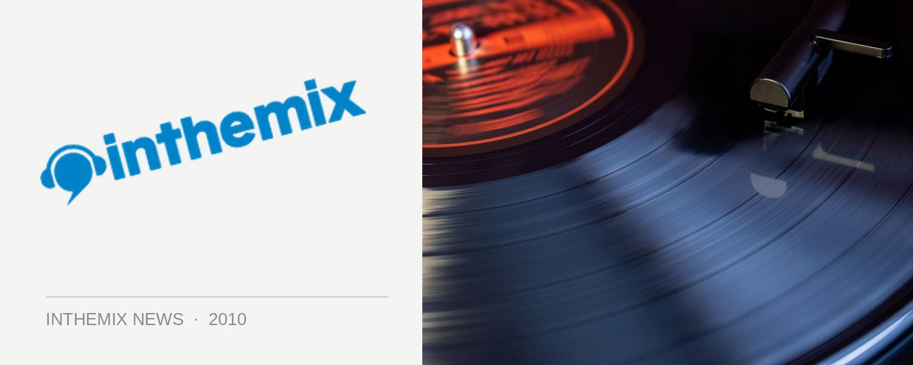

Drugs & wellbeing - do you know everything that you need to?
Whether it’s discussed out in the open or not, drug use remains a crucial issue for the dance community. Ultimately it’s all about the music, but nonetheless, drug use has been and will continue to be a characteristic of the subculture that we all know and love. The problem though with illegal substances is that informed conversation is often throttled by the ‘just say no’ stance of government and authorities. How can we make an informed choice when we don’t know the basics?
That’s where betweenthelines.net.au comes in. It’s a new online community for young people who participate in the use of recreational (or otherwise) drugs, with a finely tuned balancing of both expert and everyday perspectives on the issue. In 2010, Between The Lines have partnered with ITM to help cast the spotlight on some of the most important questions, and our brand new hub is now up and running.
What are the long term consequences for mental health? What is really in the drugs that are being consumed? What are the legal ramifications for users? Will governments continue to pursue the ‘War On Drugs’? All this is discussed and more, along with plenty of other important facts and info about drug use. Most importantly, we want you to comment and contribute by offering your own experiences and ideas on the topics presented.
Between The Lines is not about saying “drugs are bad, m’kay”, and it’s not about glorifying their use. Instead, it’s about presenting a range of expert endorsed facts and perspectives in an open space for everyone to explore.
Interested? Check out the ITM’s Between The Lines hub now at inthemix.com.au/betweenthelines, or have a look at some of the topics below that have been discussed so far…
> Is this the end of the ‘war on drugs’?
> What’s your head got to do with it: drugs & mental health
> MDMA ‘disappearing’ from UK clubs
> Why do people take drugs?
> Legal highs to hit festivals ‘big time’